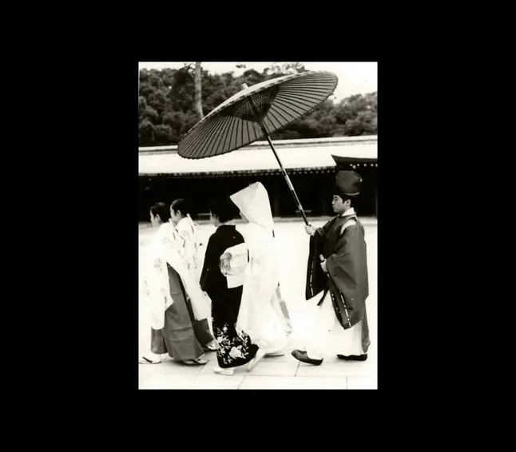
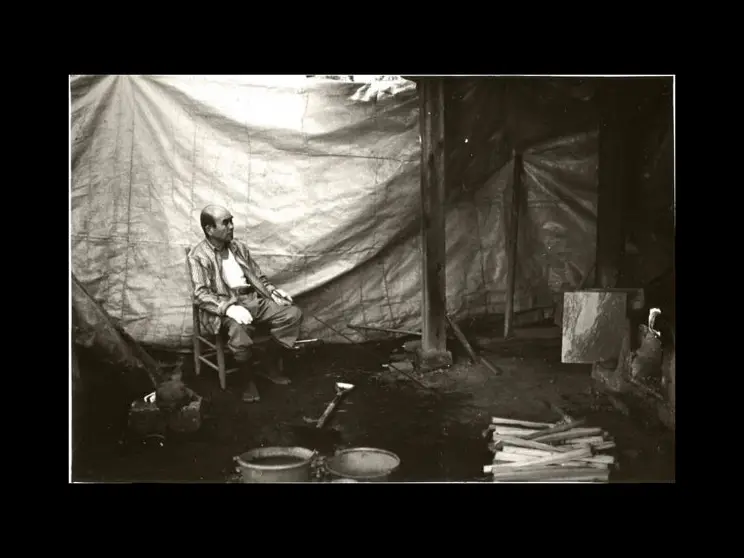
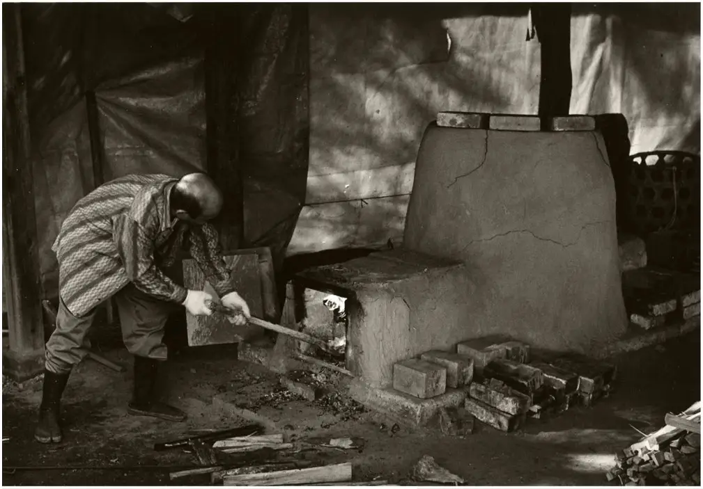

I thought I’d try something a bit different on this rather too quiet blog. So to help celebrate the book launch of Paul Kenny’s O Hanami: The Celebration of Transient Beauty. I corralled the help of Graham Cook and we put together some questions which I hope not only enlighten you about the book, but also some of Paul’s thinking and working methods.
If you haven’t ordered a copy yet, it is published by Kozu Books, pricing starts at £40 with Special Editions available. The forward is by Francis Hodgson.
Q: You have developed various themes over 30–40 years. They are different, but do link. What is common seems to be the method of capturing them via a scanner. Do you ever get the urge to do something totally different and to try to realise your concepts using alternative methods of capture and reproduction?
A: I’m led in my methods and techniques by a possibility that appears in my head…the challenge is then to work out a way of achieving a perfect manifestation of that vision. I’ve investigated 3D printing to create a surface texture, but found it impossible to link to someone who can help make those visions real. Like so many things in my work, I expend energy pursuing something but flag and put it on the back burner until I see another opportunity or regain enough energy and space to go again.
HP were helpful and gave me some leads to the University of West England but that lead went cold…next was a company in Madrid who specialise in 3D printing for museums…that went cold too.
Q: Taking that thought a little further, have you ever considered working at a larger format with ‘one-off’ works that are perhaps mixed media?
A: I’ve been developing my work on lightboxes for over a year. The idea to try this form of presentation is classically how my mind works; a cluster of thoughts amalgamate into an idea. I’d been pondering on the difficulty of getting work seen in a world where we are bombarded daily with more quality images every day. How can you stand out in such a bear pit of images?
On Twitter I see those overhead shots of the big photo fairs, Photo London, AIPAD New York, Paris Photo…hundreds of galleries showing thousands of people’s work. So I’ve been looking at presentation. For many years I’ve had an interest in the icons of the Greek and Russian Orthodox Church, masterpieces of maximum power in minimum form. The monks who made them call them “windows into heaven”. I’m in no way ‘religious’ but I love the idea that a small, largely two dimensional work can offer a portal to an amazing complex world.
In addition I’d seen some amazing work on YouTube by Clifford Ross around the same time I was very moved by seeing the Bill Viola installation in St Pauls Cathedral. Although these are both videos, I liked the idea of presenting digital work on screens treated like frames.
The final thread came from my love of the iPad, I use it all the time and the thought kept surfacing that my images looked better on a backlit display than in a print; all this led to my pursuit of making backlit works.
I’ve been down many blind alleys and invested huge amounts of time and energy in things that didn’t quite work but eventually after teaming up with a company in Gateshead and using 12v LED lighting lighting, I’m happy I can make them to the blueprint of my imagination.
Q: You’ve mentioned in the past that you like to see the nose-marks on the glass of framed images as the viewer tries to get as close as possible. Have you ever considered the possibilities of making your imagined dream-like world as objects that are more tactile allowing audiences to feel their magic?
A: The nose thing is about wanting the work to work in different ways from different distances. If you walk in a room or a gallery, I want the image to make enough impact to draw you to it and the closer the view, the richer the reward.
One of the downsides of the photographic medium is that people tend see it as understood in the most fleeting of glances. The whole meaning of a picture seen with the first glance. I want my work to have that simple power but also to be intriguing, multi layered, complex and thought provoking.
Q: The explosion of digital image making has arguably liberated creativity for a huge number of people. Do you think the collateral damage from such an explosion has led to a complacency and lack of originality?
A: It’s a good question….I feel ambivalent…on one hand, yes, it’s a very crowded marketplace. Too many people chasing fame, recognition and possibly fortune. Look at the number of competitions, courses, “experience“ holidays and niche magazines and websites, it means you see the same images over and over. You have to remember, I am very clear that photography is JUST a medium, it’s not really very difficult to fathom and in truth, it has huge limitations. In that environment it’s very hard to be truly creative and make something that is special.
On the other hand I love the fact that tens of thousands of people are out there trying to be creative. I have thought that if you add RPS groups, camera clubs and other groups, photography must be the largest network of people involved in ‘creative pursuit’ in the land. And if we assume that having a creative element in your life is positive for well being and mental health, then it’s a huge positive. I love the fact that people do it.
Q: You work in series for very good reason. Do you think that the ‘artist’ as a photographer can only be taken seriously if he works in such a way?
A: This is a huge question! It needs a debate not a few words.
I heard Grayson Perry once say, ”it’s the job of artists to notice things”. He’s right but, for me, it only becomes art when the artist combines many things he/she has noticed into one image so that ALL those noticed things are potentially readable by a viewer.
I’ve noticed how beautiful black fir trees are against a snow field, but if I photographed it, for me, it wouldn’t amount to enough for it to be art. I want to know, what else did you see, what thoughts did it set off in you and how does it relate to other thoughts you’ve had.
So making art is a process, it’s informed by other images you’ve made, techniques you have mastered but moreover, by the thoughts you want to add into the next image. This inevitably leads to work being in some kind of series.
The other intriguing hand grenade in your question is that of ‘being taken seriously’…by whom? It’s really important to know who you want to be taken seriously by and also to be unaffected by others who seem to wield power and influence, but don’t take you seriously.
On my workshops I try to get people to answer the fundamental question ‘why am I doing this?’. Often the stock answer is, ‘I just do it for my own amusement’. I don’t think that is often the truthful answer, I think in most cases it’s far more complex than that.
Q: What took you to Japan?
A: Several senior curators and notably Andy Goldsworthy commented that my work would ‘go down well in Japan’, they thought its reliance on nature, simple reduction and its contemplative content would appeal. So I wrote to three funding bodies and one of them, The Great Britain Sasakawa Foundation invited me to enter a submission.
Q: Did you produce work while you were there?
A: I’m afraid I reverted to the role of eagle eyed documentary photographer. I only took my Nikon FT2 with bog standard 50mm lens and some rolls of Ilford FP4.

While I was in Japan I stayed in Tokyo mainly and had managed to agree five meetings with institutions and curators.
My one trip outside was a three day trip to the town of Utsunumya (no, I’d never heard of it either). The curator at the Tochigi Prefectural museum invited me, he had been a leading light in organising a national touring Andy Goldsworthy show.
He took me to Mashiko. Home of the potter Shōji Hamada he is dead but had been designated ‘national living treasure’. He taught Bernard Leach and his style spawned all that Cornish Habitat look.


I did get to meet his grandson Tomu who was the seventh generation to work the pottery.
I did bring some material back, some leaves, some paper and some materials.
Q: How did O Hanami come about?
A: I saw one day, on the second day in Tokyo, a big group of people in the park, sitting on huge tarpaulins, drinking beer and cheering every time the wind showered them with pink cherry blossom petals.
Back at my hotel, I quizzed a receptionist who spoke reasonably good English, ‘O Hanami’, she said, I asked her to explain, ‘flower watching’, she said, seeing my puzzlement, she thought for a long time then said ‘the celebration of Transient beauty’….I couldn’t believe my ears.
I wrote it down in my notebook and the phrase played over and over in my mind until it became inescapable.
Concepts that were forming in my mind resurfaced in 2003 when I spent 3 months as artist in residence at Mere Sands Wood, a nature reserve in Lancashire.
The catalyst that allowed all these threads to join was a very harsh winter in Northumberland. We were completely snowed in for over three weeks around January 2011 and I was forced to stick close to home – trips to the beach were out of the question for about a month. This resulted in my field of vision being restricted; I was forced to work with the world around my feet. Teasing some scraps of natural material from under the snow or from the ice in the frozen garden pond, I began making a new body of work.
Q: What themes and inspirations do you feel are at the heart of O Hanami?
A: Truth
Beauty
Power of nature
Rhythms of the seasons
Phases of the moon
Fragility of nature
Linkages between micro and macro
Destruction of Nature in pursuit of “progress”
Mapping the land
Separation of the land for commerce (field and road patterns, grid lines)
While in Japan I developed half-formed thoughts and ideas about an English ‘Hanami’ – fleeting manifestations of natural beauty, of flowering Blackthorn, of paper thin sheets of silver birch bark, or the slow firework explosions of cow parsley and hogweed in the hedgerows.
During the harsh winter, I sought out beauty and fragility in the scraps of gathered material from my garden and the hedgerows, mindful of my concerns about the landscape and the scars and marks left by man as the land is ordered and shaped, clipped and manicured.
As the winter moved on, dead hosta leaves evolved into relief maps; the wind lashed and stripped paper-thin sheets from the birches around the pond; the silver leaves of last summer’s bedding plants were flattened and creased by the weight of snow and ice; on a dog walk, the ash keys lay like an ordered shoal of goldfish on wet tarmac; the farmer clipped and levelled and straightened the few remaining hedgerows; at the entrance to my studio, blown from another garden, the dried heads of hydrangea flowers appeared; the slivers of windblown leaves sat frozen on the surface of the pond like scraps of maps or aerial photographs…these and many more layers were the roots of the winter’s work.
As winter led into spring, I saw the possibility of forming a coherent body of work encompassing the whole year cycle. A series made from the landscape, about the landscape around home and studio, using material which follows the seasons and their cyclical pattern of brief, but spectacular existence.
Q: Is O Hanami related to Seaworks which has been your predominant project over your working life, or do you think it is a separate direction/project
A: I don’t really see a difference in the two series, they are about the same thing really, it’s just evolved that it splits into Land and Sea. There are references to my whole 40 years of work and comments about here and now.
Q: Have you created new work for the book or are there plans to create new work with O Hanami in the future? (I found that working on my book gave me a nudge to push on with my project in a new direction)
A: There are some new works in the book, prompted mainly by two devastating storms which ripped through Northumberland about September last year.
I’ve also started growing and drying specific flowers with a view to making work in the winter.
Thank you for taking the time to answer these questions Paul, and good luck with the book!
Paul is currently exhibiting at The Lowry, Salford in Expect the Unexpected 29 Jun–29 September and O Hanami: The Celebration of Transient Beauty at Gavagan Art in Settle Town Hall from 13 July–17 August
| « next | » previous |